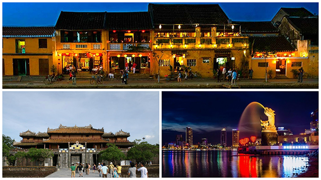

Giá từ: 5.590.000đ/người
🚗Đà Nẵng – thành phố của những cây cầu – là điểm đến lý tưởng cho hành trình khám phá miền Trung đầy sắc màu.
Khi bình minh lên, biển Mỹ Khê nhẹ nhàng vỗ sóng, từng con thuyền đánh cá trở về sau một đêm dài, mang theo hơi thở mặn mòi của đại dương.
Hành trình đưa bạn lên Bà Nà Hills, nơi mây trời bồng bềnh và Cầu Vàng huyền thoại vươn giữa không trung, tạo nên bức tranh kỳ ảo.
Buổi chiều, bạn có thể dạo chơi bên bờ sông Hàn, ngắm cầu Rồng phun lửa rực rỡ khi đêm về.
Đà Nẵng là sự giao thoa giữa năng động và bình yên – nơi du khách đến rồi lại muốn quay trở lại để tìm chút dịu dàng miền biển.